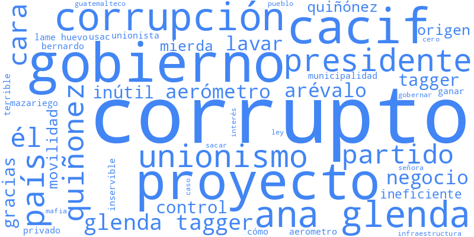
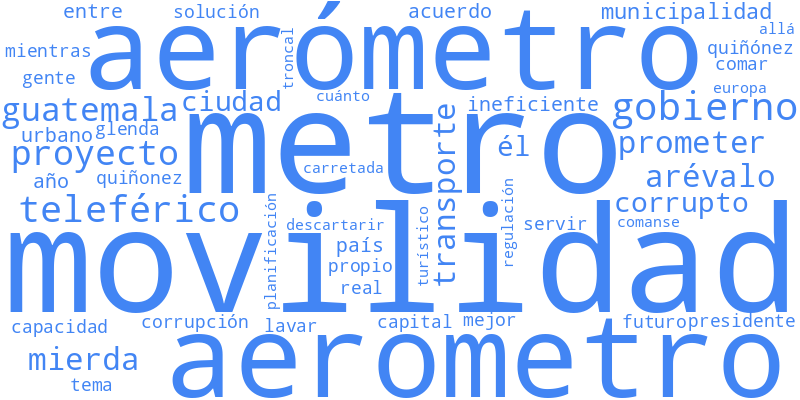
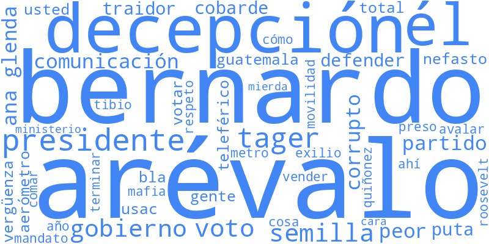
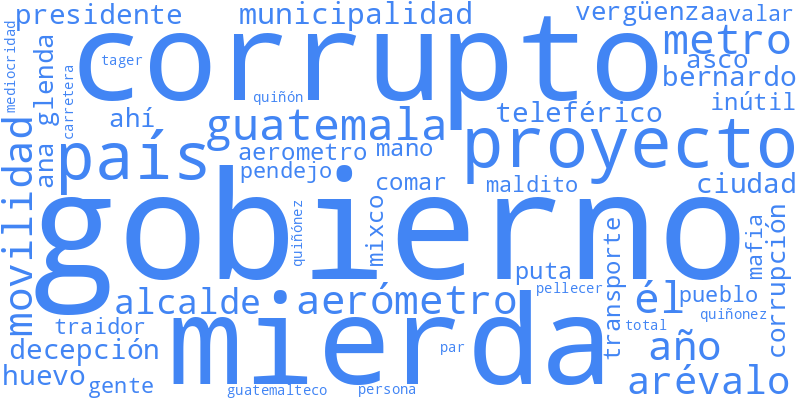
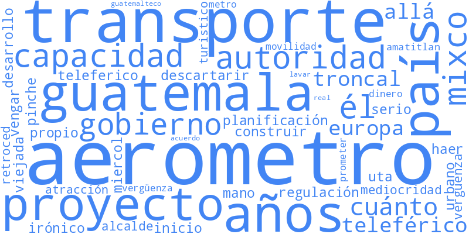

El debate digital en torno a Ana Glenda Tager (AGT) y el proyecto de transporte urbano del Aerómetro en redes sociales revela complejas dinámicas de opinión pública, tensión municipal y redes de amplificación coordinada.
Un análisis detallado de la topología de la red y el comportamiento de las cuentas revela una clara división en la autenticidad del discurso:
Este clúster representa la mayor masa crítica de indignación en la red. Se enfoca en denunciar supuestos pactos a puerta cerrada vinculados a la adjudicación del proyecto.

Eje discursivo: Uso intensivo de palabras como pactos, corrupción y menciones directas a figuras de la oposición.
La conversación aquí se centra en la ineficiencia técnica percibida del proyecto de transporte y la calidad de los materiales empleados, además de los retrasos administrativos.

Eje discursivo: Críticas técnicas fundamentadas y debates de movilidad urbana mezclados con desencanto de gestión.
Se observa un desencanto generalizado de los internautas hacia las instituciones municipales y los partidos gobernantes por no resolver el conflicto de forma transparente.

Eje discursivo: Un sentimiento de abandono estatal y decepción profunda con los representantes electos.
Este bloque agrupa la defensa oficial y los argumentos a favor de la viabilidad del Aerómetro y el desarrollo de infraestructura de transporte urbano.

Eje discursivo: Llamados al orden, defensa del desarrollo urbano e infraestructura de movilidad vial.
¿Qué pasa cuando removemos el "ruido político" y las discusiones sobre figuras controversiales como Ana Glenda Tager (AGT)? La conversación se reconfigura de forma drástica:

La discusión se reenfoca positivamente hacia la movilidad urbana limpia, el ordenamiento del tránsito y el desarrollo tecnológico. No obstante, este sub-debate representa una parte minoritaria de la red global, demostrando que el conflicto político domina por completo el ecosistema.
La red contiene 4,596 cuentas inorgánicas (10.55%) que muestran comportamientos altamente automatizados y coordinados:
A continuación se muestra una pequeña muestra del listado de cuentas sospechosas identificadas por anomalías en su estructura de interacción:
En el corazón de la red se sitúan los hubs de alta centralidad. Estos actores actúan como puentes de información (bridges) entre los distintos clústeres temáticos y son los encargados de viralizar las opiniones en el ecosistema.
Observa el zoom a los 20 perfiles más influyentes. Sus conexiones cruzadas unen los mundos del debate orgánico y el asedio coordinado.
Puedes colocar el cursor o presionar sobre los nodos más grandes del canvas para ver su identificador y rol.